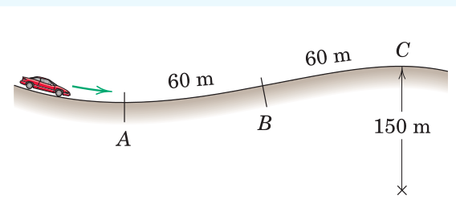
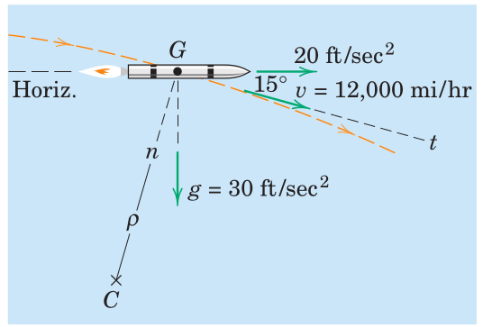
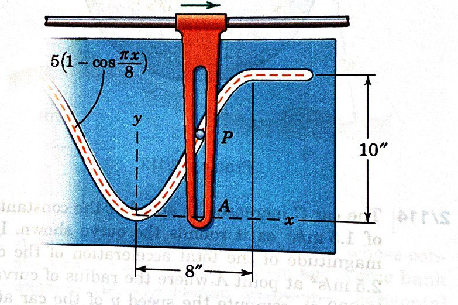
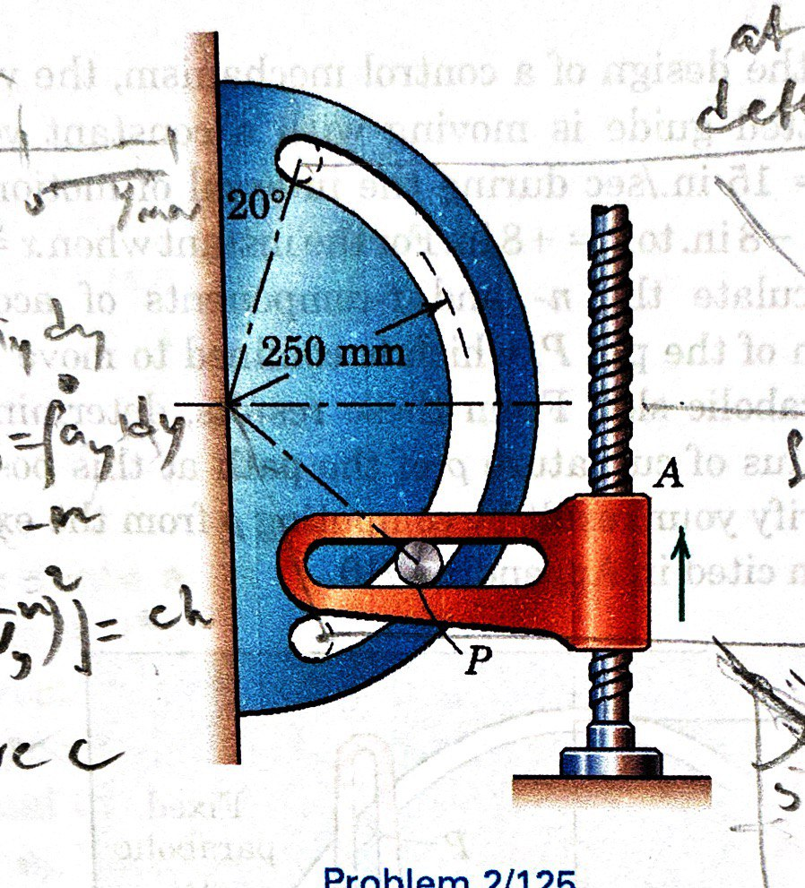

curvilinear motion
Particle Kinematics
2025-09-30
Table of Contents
1. Plane Curvilinear Motion
2. n-t Coordinates
3. Examples
4. Review
1.
Plane Curvilinear Motion
motion within a plane
the path trajectory
the path variable, \(s\)
1.1.
Description without Coordinates
change in placement, \(\Delta\boldsymbol{r}\)
velocity, \(\boldsymbol{v}=\dot{\boldsymbol{r}}\)
velocity magnitude, \(v=\dot{s}\)
1.2.
Acceleration
change in velocity, \(\Delta\boldsymbol{v}\)
acceleration, \(\boldsymbol{a}=\dot{\boldsymbol{v}}\)
2.
n-t Coordinates
normal and tangent to the path
natural unit vectors (\(\boldsymbol{e}_n\) and \(\boldsymbol{e}_t\))
center of curvature, \(C\), and the radius of curvature, \(\rho\)
rotation about \(C\)
velocity is aligned with the tangent
2.1.
Acceleration Components
tangential acceleration, \(a_t = \ddot{s}\)
normal acceleration
3.
Examples




4.
Review
From
the book
: Chapter 2.5, Problems